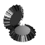
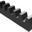
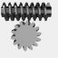
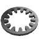

GF Gear Generator
Description
This is a minimalistic gear design application. As such, its designs are made following the metric module DIN standard series. Regardless, it is made for everyone, no matter your amount of knowledge or if you have an engineering background. It includes 11 different types of gears (7 standards, 2 non-standard and 2 experimental) for every project you might want to implement them in:
- Spur Gear.
- Simple/Double Helical Gear.
- 90° Bevel Gears.
- Gear Rack.
- Worm Gear Drive (helical and straight hobbed face).
- Standard Internal Spur Gear.
- Non-Standard Internal Spur Gear (tooth profile is inverted; it’s better for less trimming interference).
- Standard Internal Helical Gear.
- Non-Standard Internal Helical Gear (tooth profile is inverted; it’s better for less trimming interference).
- Profile Shifted Spur Gear (Experimental method).
- Profile Shifted Helical Gear (Experimental method).
Version 1.1.0 Changes include:
- When creating gears, they are now placed into a new component.
- Normal method for helical gears is now supported.
- Normal method for helical racks is now supported.
- Screw gears are now possible.
- Profile shifting method was improved and resembles more closely the geometry produced by manufacturing.
- After creating a gear, key parameter values and selections are saved in the boxes for your convenience.
- Construction planes are hidden automatically when creating Double Helical Gears.
- Gears are no longer automatically created when clicking another command.
The two types considered non-standard were included for 3D printing since these designs of internal gears have proven to be practical when tight tolerances are a liability. Nonetheless, these designs are as useful as others.
The two variants considered experimental are the ones that use profile shifting. Profile shifting is a manufacturing method for gears that are needed to fit a larger/smaller mesh space while remaining with the same specs (number of teeth, module, pressure angle, etc.). If you’re planning to fabricate these gears using our designs, you have to consider they won’t reflect the “under cut” condition (for more information, visit KHK Profile Shifting). This design method is still in development and should not be relied on for accurate visualization or industrial level designing.
General Usage Instructions
Next is provided the set of instructions for using the application:
- Selecting the gear type and characteristics.
- Clicking the corresponding icon.
- Selecting the options corresponding to desired precision and characteristics.
- Introducing the necessary technical data for the gear(s).
- Clicking the OK button and wait for the component to display.
- Gear(s) will be displayed at or near the origin of the active document.
It is expected to fit the user’s workflow in a way that they only need to know which type of gear and its technical information so the add-in can generate it. Once done, the user can import the file to STL for 3D printing or dwg (for internal/external spur gears and straight racks that is) for laser cutting.

{kind=link}
{kind=link}
{kind=link}
Commands
| Ribbon/Toolbar Icon | Command | Command Description |
|---|---|---|
|
|
Spur gear |
This command generates a spur gear located at the origin of the active part document. It has the fast compute option (which all the other commands have as well) that makes the gear designing process faster by reducing the number of points in the involute spline. |
|
|
Simple/Double Helical gear. |
Generates a helical gear located at the origin of the active part document. It has the clockwise option (which orientates the helix to be clockwise), the double helical option (makes the gear to be a Herringbone type) and the fast compute one. |
|

|
90° Bevel Gears. |
It generates a couple of matching bevel gears that intersect at 90°. One of the gears will be located at the origin, whilst the other one will be at a set distance at the X-axis. It also includes the fast compute option |
|

|
Helical/Straight Gear Rack. |
Generates a gear rack. It has the option to make the rack with the teeth helix angle (0° for spur gears) to match the helical gears, according to the input data form the helix angle. It also has the option of fast computing. |
|

|
Worm Gear Drive. |
This command generates the worm and the worm wheel for the gearbox. It has the option to use either a helical gear as the wheel or make one according to the hobbing process. It also has a fast compute option. |

|
Internal Spur Gear. |
Generates internal spur gear located at the origin. It includes the fast compute option. |
|

|
Non-Standard Internal Spur Gear. |
Generates an internal spur gear with the tooth profile of an external one located at the origin. It also includes the fast compute option. |
|
|
Simple/Double Internal Helical G |
Generates an internal helical gear located at the origin of the active document. It includes the option of clockwise orientation as well as the double-helical and fast computes options. |

|
Non-Standard Internal Helical G |
Generates an internal helical gear with the tooth profile of an external one, located at the origin of the active document. It includes the option of clockwise orientation as well as the double-helical and fast computes options. |
|
|
Profile Shifted Spur Gear. |
Generates a non-standard profile shifted gear located at the origin of the active document. This is an experimental design method and should be treated as such. It has the fast compute option and depending on the value for the profile shifting coefficient, it will make a standard spur gear (X=0) or a profile shifted one (-1<=X<=1). |

|
Profile Shifted Helical Gear. |
Generates a profile shifted helical gear located at the origin of the active document. This is an experimental design method and should be treated as such. It has a fast compute option as well as the clockwise orientation and double-helical options. Depending on the value for the profile shifting coefficient, it will make a standard helical gear (X=0) or a profile shifted one (-1<=X<=1). |
Installation/Uninstallation
The installer that ran when you downInstall:
The installer that ran when you downloaded this app/plug-in from Autodesk App Store has already installed the app/plug-in. OR, simply double-click the MSI to install the app.
Uninstall for Windows:
You can unload the add-in without uninstalling it by clicking the "Stop" button when the add-in is selected in the list box on the "Add-Ins" tab of the "Scripts and Add-Ins" dialog.
Unchecking "Run on Startup" causes the add-in not to be loaded in future sessions of Autodesk® Fusion 360™.
To uninstall this plug-in, exit the Autodesk product if you are currently running it, simply rerun the installer, and select the "Uninstall" button.
OR, you can uninstall it from 'Control Panel\Programs\Programs and Features' (Windows 7/8.1/10), just as you would uninstall any other application from your system.
Uninstall for Mac:
You can unload the add-in without uninstalling it by clicking the "Stop" button when the add-in is selected in the list box on the "Add-Ins" tab of the "Scripts and Add-Ins" dialog.
Unchecking "Run on Startup" causes the add-in not to be loaded in future sessions of Fusion 360.
- Navigate to ./ApplicationsPlugins folder and select the app bundle you want to uninstall
- Either drag the app bundle to the Trash or right-click and select “Move to Trash”
- Right-click on the Trash-Can and select “Empty Trash”
- If you prefer keystrokes, you can also just select the app bundle and then hit Command+Delete to move the app to Trash, then empty the Trash and the app will be removed.
Additional Information
Known Issues
The application might be awfully slow or crash making gears with a considerable number of teeth and a module between the 7- and 14-mm mark if the option of fast computing is not selected. Refer to the video for more information.
Contact
Author/Company Information
Support Information
You can contact us any day of the week during office hours at gfsolucionesintegradas@gmail.com and we'll try to reply as soon as possible.
Version History
| Version Number | Version Description |
|---|---|
|
1.1.0 |
Increased functionality for helical gears, racks, profile shifted gears and overall practicality. |
|
1.0.0 |
Initial release |